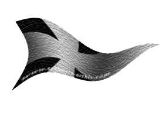
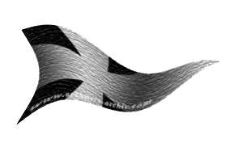

| Übersicht,
Anschläge und Stammtisch (RPG) |
|
Unsere Taverne soll leben
|
Ninniach Lhuthien
  |
*Ninni überfliegt die neuesten Anschläge und schmunzelt* Ob wirklich Vorhänge gewünscht werden? *fragt sie sich leise*
Baronesse Ninniach Lhuthien,
Vorsteherin von Tinu Anorêl,
Anführerin der glorreichen Nation "Nûr nui Ninniach"
Zur 21. Stunde am 84.Erntemond im Jahre 455 |
08.07.13 19:40
 |
|
Lyra Callionymus
  |
Nicht zu vergessen ist der ausgestopfte Haifischkopf über dem Kamin. Er verleiht dem Feuer unten drunter erst das richtige Ambiente! Ansonsten würde es bloß langweilig vor sich hinbrutzeln, so wie Feuer halt ist.
Bei dem Anblick des Haifisches fühlen sich die Besucherinnen und Besucher gleich, als würden sie in das Antlitz des leibhaftigen Totfeindes Bendurs blicken. Ja solch ein ausgestopfter Haifischkopf gehört normalerweise in jedes Wohnzimmer.
Edle Lyra Callionymus,
Vorsteherin von Atlantis,
Kardinälin im Dienste des einzig wahren Glaubens an Bendur,
Anführerin der glorreichen Nation "Freie Walfänger",
Siegerin im Steinekullern 440 und 444
Zur 22. Stunde am 84.Erntemond im Jahre 455 |
08.07.13 19:44
|
|
Tattergreis
   |
Es war mir eine Ehre das Glas zu spenden. Besonders gelungen finde ich auch die beiden Fenster, vertikal übereinander bei der Tischreihe links der Schank. Nun können auch die Kleinsten der Kleinen beim Zechen aus dem Fenster sinnieren.
Freiherr Tattergreis della Luna,
Vorsteher von Nín Andúne,
Anführer der glorreichen Nation "Luna Park S.A.L"
Zur 23. Stunde am 84.Erntemond im Jahre 455 |
08.07.13 20:09
|
|
Ninniach Lhuthien
|
Herzlichen Dank an alle, die so fleissig mitgemacht haben. Selbst die eigenwilligen Verschönerungen durch einen Rumkrug haben sich als Segen erwiesen, doch bitte ich alle, sich nun in die nächste Stufe zu stürzen. Leider bin ich für eine Weile auf Reisen, doch die Freigetränke für Helfer gelten immer noch und der Wirt hat genügend Vorrat.
Ebenso bleibt meine Begleiterin und Freundin Mundra in der Taverne und führt die Küche.
Wenn ihr wissen wollt, ob sie kochen kann? ... Fragt Glenn Dowan, er ist schon oft genug in den Genuss gekommen.
Freifrau Ninniach Lhuthien,
Vorsteherin von Tinu Anorêl,
Anführerin der glorreichen Nation "Nûr nui Ninniach"
Zur 19. Stunde am 87.Erntemond im Jahre 455 |
09.07.13 11:52
|
|
Ecthélion kánotir Gondolin
 |
Wertes Scherbenvolk.
Soeben hat mir Mundra erklärt, dass ihr eine Ladung Rammirücken verdorben sind.
Kein Wunder, bei der Kücheneinrichtung! Töpfe mit löchrigen Deckeln oder mit gar keinen Deckeln! Die Feuerstelle viel zu klein, die Vorratskammer viel zu klein und ungekühlt. Der Räucherofen hat auch schon bessre Tage gesehen und das Pökelsalz ist alle.
Wer also Spenden beisteuern kann, möge diese bitte in der Taverne abliefern oder gleich schon verbauen.
Benötigt werden mindestens:
15 Töpfe mit passenden Deckeln in 4 Größen
3 Pfannen
3 Meisterkoch-Messersätze mit Hackebeil für widerspenstige Knochen
2 Sparschäler
5 große Löffel aus Holz, 5 aus Eisen
15 Schüsseln aus Steingut
1 Dämmf-aufsatz (was das ist, hat mir Mundra nicht verraten)
1 neuer Räucherofen
1 regelbarer Kochherd mit 5 Feuerstellen
1 Fass Pökelsalz
Regale und Schneemänner für die Vorratskammer(welche auch mal vergrößert werden könnte)
und das wichtigste: Rum für die Handwerker!
Wer mehr von der Kochkunst versteht, als ich(das is keine kunst), kann gern noch was hinzufügen, oder selbst besorgen und zur Taverne bringen.
Freiherr Ecthélion kánotir Gondolin,
Vorsteher von Fendrakan Zuflucht
Zur 1. Stunde am 4.Dunkelfrost im Jahre 455 |
10.07.13 23:01
|
|
Tattergreis
|
*Liest interessiert die Liste und weist seine Lagerwichtel an, als erste Hilfe schnellstens 17 Fass Loh´schen Rum an die Taverne zu liefern.
Danach ruft er nach seinem Baumeister und trägt ihm auf, sich Gedanken und erste Skizzen zu einem Platz im Freien, dierkt vor der Taverne zu machen. Für Schönwetter und denkt an Tische, Sessel, Feuerstelle, Wasserbottich zum Kühlen des wichtigen Bieres, Holzgestänge und allerlei schattenspendende Pflanzen.....*
Freiherr Tattergreis della Luna,
Vorsteher von Nín Andúne,
Anführer der glorreichen Nation "Luna Park S.A.L"
Zur 11. Stunde am 6.Dunkelfrost im Jahre 455 |
11.07.13 12:28
|
|
Ecthélion kánotir Gondolin
|
Lyra Callionymus hat bereits große Säcke voll Eis gebracht, um den Kühlraum damit zu betreiben. aber denkste, irgendjemand hilft einem, die dinger in die Küche zu schleppen? Pustekuchen!
Freiherr Ecthélion kánotir Gondolin,
Vorsteher von Fendrakan Zuflucht
Zur 5. Stunde am 17.Dunkelfrost im Jahre 455 |
14.07.13 0:44
|
|
Ninniach Lhuthien
|
*vom anderen Ende der Scherbe kommt eine Taube auf Ecthélion kánotir Gondolin zu geflogen, landet auf seiner Schulter und legt ihm ein Pergament in die geöffnete Hand, auf der aussen steht: Bitte ans Anschlagbrett heften... Ecci entrollt es, liest die Nachricht und heftet es grinsend ans Brett*
Liebe Scherblinge,
wie ihr vielleicht mitbekommen habt, bin ich zur Zeit auf Reisen. Doch meine Freundin Mundra, die das kochen in der Taverne vorüber gehend übernommen hat, schrieb mir, das dank einer Spende der neue Räucherofen bereits installiert und in Betrieb genommen ist und es heute Abend für alle Fischfreunde geräucherten Makrelen, Aal und Forellen gibt.
Es wäre schön, wenn es reichlich Gäste gibt. Getränke sind natürlich auch ausreichend und in aussergewöhnlich großer Artenvielfalt zu bekommen.
Laßt es euch schmecken!
Ninni
Freifrau Ninniach Lhuthien,
Vorsteherin von Tinu Anorêl,
Anführerin der glorreichen Nation "Nûr nui Ninniach"
Zur 24. Stunde am 18.Dunkelfrost im Jahre 455 |
14.07.13 10:44
|
|
Ecthélion kánotir Gondolin
|
Bericht über kürzliche Fortschritte an der Taverne:
Tattergreis della Luna hat Baumaterialien und Baupläne für ausgedehnte Außenanlagen geliefert und ist, zusammen mit einer Bautruppe aus Fendrakan Grenzfeste, dabei, einen Biergarten mit Grillmauer und angrenzendem Schwimmbecken mit Wasserrutsche(vermutlich für Kinder) zu errichten.
Freiherr Ecthélion kánotir Gondolin,
Vorsteher von Fendrakan Zuflucht
Zur 13. Stunde am 31.Dunkelfrost im Jahre 455 |
17.07.13 8:57
|
|
Ecthélion kánotir Gondolin
|
Eissschicht vom Schwimmbecken entfernt und Wasser abgelassen.
Freiherr Ecthélion kánotir Gondolin,
Vorsteher von Fendrakan Zuflucht
Zur 12. Stunde am 79.Dunkelfrost im Jahre 455 |
28.07.13 13:33
|
|
Chihiro Takeshi
  |
*Eine Koboldkriegerin aus Chis Gefolge verteilt Handzettel und schickt gleichzeitig Material und kräftige Kriegerinnen in die Taverne für eventuelle restliche Ausbaumaßnahmen.*
~~~*~~~*~~~*~~~*~~~*~~~*~~~*~~~*~~~*~~~*~~~*~~~*~~~*~~~
Tanzfest für alle:
Es findet zur 6. Stunde am 76. Saatmond ((Samstag 17.08.2013 um 20.30 Uhr)) ein Saatmond-Tanzfest in der öffentlichen Taverne statt. Jeder ist herzlich dazu eingeladen. Es gibt genügend Speis und Trank sowie Musik, um das Tanzbein zu schwingen und sich des Lebens zu freuen.
~~~*~~~*~~~*~~~*~~~*~~~*~~~*~~~*~~~*~~~*~~~*~~~*~~~*~~~
Kardinälin Chihiro Takeshi,
Vorsteherin von Cho no Shi,
Kardinälin im Dienste des einzig wahren Glaubens an Urvan,
Anführerin der glorreichen Nation "Cho no shimai",
Arthwrfutta,
Ehefrau des ehrenwerten Arthwr Dyddplentyn
Zur 10. Stunde am 55.Saatmond im Jahre 456 |
12.08.13 22:35
|
|
Apollymi
  |
*durchsucht die Anschläge bis sie etwas entdeckt das ihr wichtig erscheint*
Euer Projekt die Taverne zu verschönern ist zwar gar nicht so schlecht geworden wie ich finde aber mittlerweile ist der Wirt verschwunden.
Wie soll in die Taverne Leben einkehren wenn die Leute von niemandem bewirtet werden?
Hat jemand den Wirt gesehen?
Die Taverne ist leider immer noch nicht so gut besucht wie früher darum habe ich noch nicht rausfinden können wann der Wirt zum letzten mal gesehen wurde.
Kann jemand weiter Helfen?
Apollymi
Zur 7. Stunde am 21.Blumenmond im Jahre 458 |
09.02.14 23:31
|
|
Ninniach Lhuthien
|
*liest sich wieder mal alle Anschläge durch und bemerkt die Worte von Apollymi. Seufzend kramt sie ihr Schreibzeug raus und heftet dann eine Nachricht ans Brett.*
Werte Apollymi, Ihr habt recht, es gibt zur Zeit keinen Wirt. Wir hatten nach der Renovierung versucht noch eine Weile mit unseren Leuten die Taverne am Laufen zu halten, aber leider war die Resonanz so gering. Nun es mag vielleicht auch damit zusammen hängen, das sich kaum jemand mehr traut, in der Öffentlichkeit... und das ist eine Taverne nun mal ... persönliches zu sagen.
Vielleicht findet ja jemand anderes einen besseren Ansatzpunkt.
Ninni
Baronesse Ninniach Lhuthien,
Vorsteherin von Tinu Anorêl,
Anführerin der glorreichen Nation "Nûr nui Ninniach"
Zur 11. Stunde am 23.Blumenmond im Jahre 458 |
10.02.14 11:35
|
|
| Narath Nargaroth (RIP) |
Die Taverne lebt doch, habe noch nie so viel Krabbelviecher auf einmal gesehen. Besorgt lieber erstmal eine Putzfrau die keine Fobie gegen Staub und Spinnen hat.
Narath Nargaroth
Zur 5. Stunde am 67.Blumenmond im Jahre 462 |
26.01.15 16:36
|
|
Ninniach Lhuthien
|
*Kommt verstaubt und mit Spinnenweben im Haar aus der Taverne und hängt einen Zettel ans Brett.*
Danke werter Narath Nargaroth für den Hinweis. Ich werde versuchen diesen Zustand zu ändern, doch zunächst muß ich erst einmal den Wirt und die Schankmaid finden.
Vielleicht weiß ja jemand etwas über deren Aufenthalt zu berichten.
Freifrau Ninniach Lhuthien,
Vorsteherin von Tinu Anorêl,
Anführerin der glorreichen Nation "Nûr nui Ninniach"
Zur 1. Stunde am 72.Blumenmond im Jahre 462 |
27.01.15 19:37
|
|
Apollymi
|
*den Anschlag studiert*
ich glaube kaum, dass es hier einen Hinweis auf den Verbleib des Wirtes oder der Schankmaid geben wird.
an einigen Tagen tauchen sie einfach auf und dann verschwinden sie wieder.
Freifrau Apollymi,
Vorsteherin von Nan i Nox,
Hexe des Herzens des ehrenwerten Markus Feuernacht
Zur 6. Stunde am 72.Blumenmond im Jahre 462 |
27.01.15 20:46
|
|
Ninniach Lhuthien
|
*eigentlich wollte Ninni nur noch schnell eine Nachricht anschlagen, da liest sie den Beitrag von Apollymi und chreibt zu dem bisherigen noch etwas dazu, bevor sie es am Brett befestigt.*
So... allen zur Kenntnis. Eine Putzinvasion in der Taverne hat statt gefunden und alles blitzt wieder. Sämtliche Krabbelviecher sind des Hauses verwiesen.
Was ihr jetzt daraus macht, ist eure Sache. Man fühlt sich dort jetzt jedenfalls wieder wohl.
Nachtrag: Es sind sowohl der Wirt, als auch die Schankmaid wieder aufgetaucht und versehen ihre Arbeit wieder.
Freifrau Ninniach Lhuthien,
Vorsteherin von Tinu Anorêl,
Anführerin der glorreichen Nation "Nûr nui Ninniach"
Zur 21. Stunde am 74.Blumenmond im Jahre 462 |
28.01.15 11:39
|
|
| Narath Nargaroth (RIP) |
*Am vorbeigehen die Zeilen liest einen Kohlenstift aus der Tasche zieht und ein Herzchen mit folgenden Zeilen hinzufügt*
Viel Spaß der ´Wir haben uns alle lieb Gemeinschaft`
Ein hoch auf den Kuschelkurs
N.N
Narath Nargaroth
Zur 2. Stunde am 75.Blumenmond im Jahre 462 |
28.01.15 12:38
|
|
Übersicht,
Anschläge und Stammtisch (RPG)
|